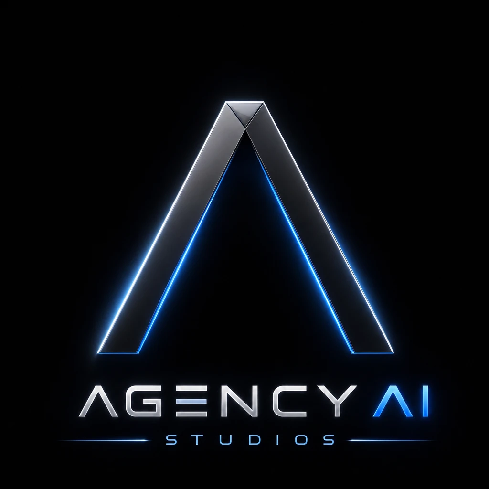
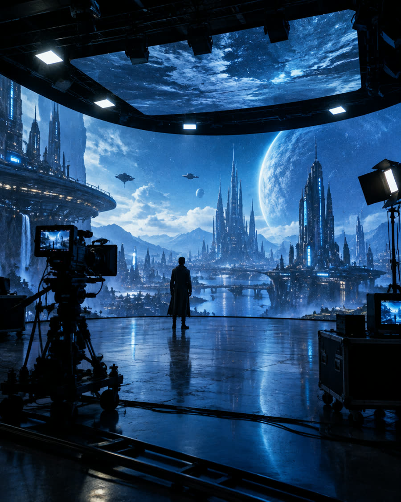
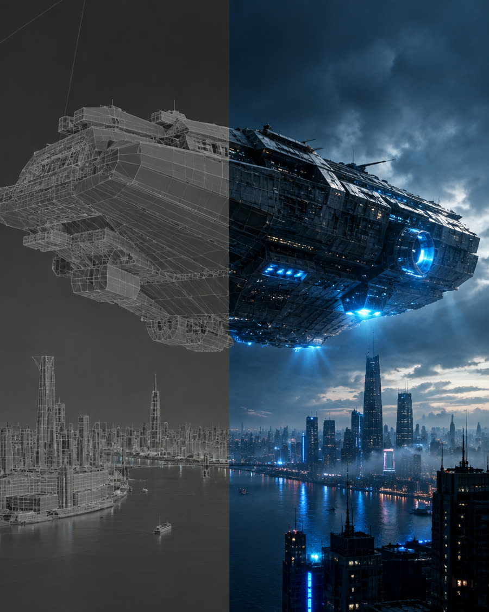
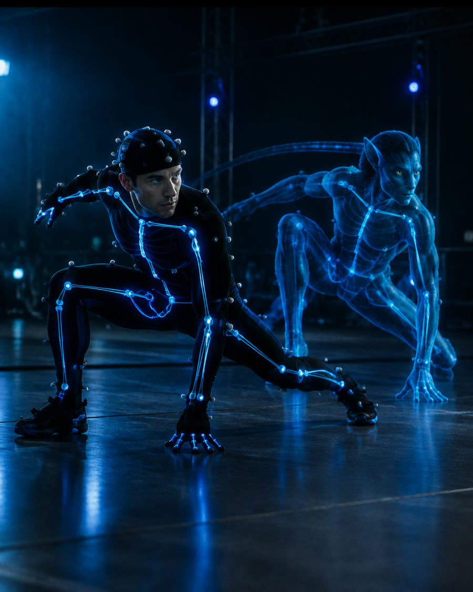
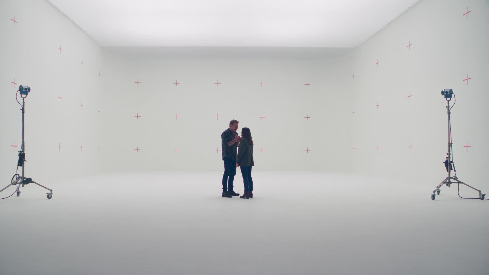

Generative Media
Image, video and audio synthesis at a scale a crew alone cannot reach.
A production studio built for the AI era. Story first, craft always, AI in service of both.
Start a projectStories are imagined differently now.
They are produced differently.
They reach audiences differently.
The studios that thrive keep their creative soul.
Working in concert, from first idea to final delivery.
The right mix for each story
People on stage, translated to screen
Worlds built in camera and in engine
Image, video and audio without limits of crew size
Formats made for an AI-enabled world
A complete creative and commercial framework from first idea to full market potential.
Story, concept, characters, worlds, and creative strategy. The foundation every great production is built upon.
Cinematic production using the right combination of human talent and AI tools, matched precisely to each project's vision.
Extend ideas across film, television, social, digital, advertising, and emerging platforms without sacrificing quality or coherence.
Brands, licensing, distribution, sponsorships, commerce, and IP. Turning creative work into lasting commercial value.
Technology doesn't replace creativity. It expands what creative teams can imagine and execute.
The most powerful productions of the next decade won't be made by AI alone. They'll be made by people who know how to use it.
Story first. Craft always. AI in service of both.
We select the right methodology for each story, never forcing every project into a single workflow. The result is content that feels right, not just technically impressive.

Image, video and audio synthesis at a scale a crew alone cannot reach.

AI-built worlds and virtual environments, shaped by human direction.

Traditional craft and AI tools, graded into a single image.

Human performance translated into digital characters.
Live action on our stages, where nothing replaces a person in the room.
Every stage is informed by creative intent. Every tool is chosen in service of the story.
Entertainment. Film, television, series, music videos, and original IP for global audiences.
Branded Content. Commercials, campaigns, product films, and branded entertainment.
Digital & Social. Short-form, serialized, platform-native. Built to perform.
AI-Native Experiences. New formats, made for an AI-enabled world.

Owning the stack is a structural advantage.
We control the full stack, from live-action capture to AI generation, post-production, and delivery.
While others outsource studio time and AI tooling separately, we integrate both under one roof, end to end.
Physical production stages and AI-powered pipelines operate side by side, so live-action capture and generation happen in one place.
On-site tooling for image, video, and audio synthesis.
Main stage and insert stage for live-action capture.
Real-time hybrid broadcast capability.
Professional control room with multi-track recording.
AI-assisted editing, VFX, color, and delivery at scale.
We don't stop at the final cut. Agency AI Studios works with a wide network of media outlets and streaming services to put your project in front of the right audience.
The platform and partner that fit the project.
Deliverables, formats and specs for each outlet.
Timing, campaigns and cut-downs that travel.
Built to serve partners who demand the highest standard of creative ambition, production quality, and commercial impact.
More content. Greater creative possibilities. Faster production cycles. We help brands compete in an attention economy by creating work that actually earns it.
New worlds, new formats, and new production models. We bring the tools and talent to develop IP that travels across screens and borders.
We help creators and personal brands transform their ideas into scalable content businesses, with production values to match their ambition.
We turn AI technology into real-world creative experiences, making the abstract tangible and the experimental commercially compelling.
Six distinctions that set us apart from every other production company, AI agency, or creative studio operating today.
Experienced storytellers and production professionals at every level of the process.
AI integrated throughout the production workflow. Built in from day one, not bolted on.
Technology deployed without ever compromising craft, quality, or visual ambition.
One idea becomes an entire content ecosystem across formats, platforms, and markets.
Built around production, IP development, partnerships, and long-term monetization.
We work with media outlets and streaming services to get your project to the right audience.
Human creativity is our foundation. AI is our accelerator.
Our network
The question was never how to produce more content.
Agency AI Studios brings together the people, the technology, and the production expertise to do exactly that, every single time.
Start a project